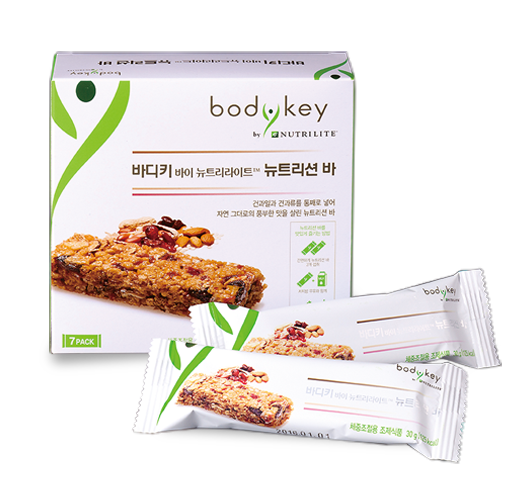

<div class="product_detail_content">
    <div class="picture">
        <div id="owl-demo" class="owl-carousel owl-theme">
            <div class="item"><span class="volume">7包</span></div>
        </div>
    </div>
    <div class="infomation">
        <h3>植物營養纖滋棒<br><span class="small">健康點心，好吃不甜膩</span></h3>

        <p>以大豆、水果、堅果烘培而成，方便食用，讓你享受自然豐富的口感同時，也提供滿滿的活力營養及飽足感</p>
        <h4>產品特色</h4>

        <ul class="list_dot">
            <li>38種植物營養成分，同時含有大豆蛋白、膳食纖維及維生素Ａ、B<sub>1</sub>、B<sub>2</sub>、C、E、鈣及鐵</li>
            <li>零飽和脂肪、零反式脂肪、零膽固醇</li>
            <li>每份123大卡，無論點心或運動前後都能輕鬆享受</li>
        </ul>
        <!-- <a class="download" href="pdf/products_bodykey.pdf"  target="_blank">營養成分PDF</a> -->
        <div class="btnWrap">
            <div class="showDetail">營養成分</div>
            <a class="download" href="pdf/products_bodykey.pdf" target="_blank">下載PDF</a>
        </div>
        <div class="detailTable">
            <table class="tableizer-table">
                <thead>
                    <tr class="tableizer-firstrow">
                        <th>重要營養成分</th>
                        <th>每份含</th>
                    </tr>
                </thead>
                <tbody>
                    <tr>
                        <td>膳食纖維</td>
                        <td>1.5 公克</td>
                    </tr>
                    <tr>
                        <td>維生素A</td>
                        <td>175 微克RE</td>
                    </tr>
                    <tr>
                        <td>維生素B<sub>1</sub></td>
                        <td>0.3 毫克</td>
                    </tr>
                    <tr>
                        <td>維生素B<sub>2</sub></td>
                        <td>0.35 毫克</td>
                    </tr>
                    <tr>
                        <td>維生素B<sub>6</sub></td>
                        <td>0.38 毫克</td>
                    </tr>
                    <tr>
                        <td>維生素C</td>
                        <td>25 毫克</td>
                    </tr>
                    <tr>
                        <td>維生素E</td>
                        <td>2.75 毫克α-TE</td>
                    </tr>
                    <tr>
                        <td>菸鹼素</td>
                        <td>3.75 毫克NE</td>
                    </tr>
                    <tr>
                        <td>葉酸</td>
                        <td>100 微克</td>
                    </tr>
                    <tr>
                        <td>鈣</td>
                        <td>70 毫克</td>
                    </tr>
                    <tr>
                        <td>鐵</td>
                        <td>1.2毫克</td>
                    </tr>
                    <tr>
                        <td>鋅</td>
                        <td>0.85 毫克</td>
                    </tr>
                </tbody>
            </table>
        </div>
    </div>
</div>
